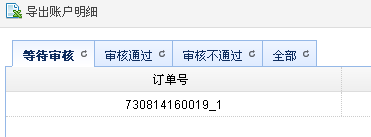
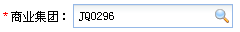

一些公共的方法随着业务的增加而增加，公共方法放置到assets/js/modules/base.js文件
| Name | Parameters | Description | Returns |
|---|---|---|---|
| showSuc | msg | 右下角滑出成功操作提示 | |
| showInfo | msg | 弹出对话框提示 | |
| showWarn | msg | 弹出警告提示 | |
| showError | msg | 弹出错误提示 | |
| showProcess | show,msg | 弹出进度条对话框，show为true时显示，为false时关闭 | |
| showConfirm | msg,fn | 弹出确认对话框，fn为点击确认后触发的函数 | |
| toolSearch | opts | 工具栏快捷搜索功能。 | |
| $.fn.createTabs | opts | 动态创建多个tabs,用于创建多个iframe标签。 |  |
| addBlankTab | opts | 主框架上打开一个新的标签。 | |
| dgSelector | opts |
打开一个单选列表选择器对话框，如果使用查询精灵 弹窗目标页面toolbar工具id分别为：dgSelectorSearchBtn，dgSelectorClearBtn |
演示dgSelector |
| iptSearch | opts |
创建一个搜索文本框
例子：戳这里 |
 |